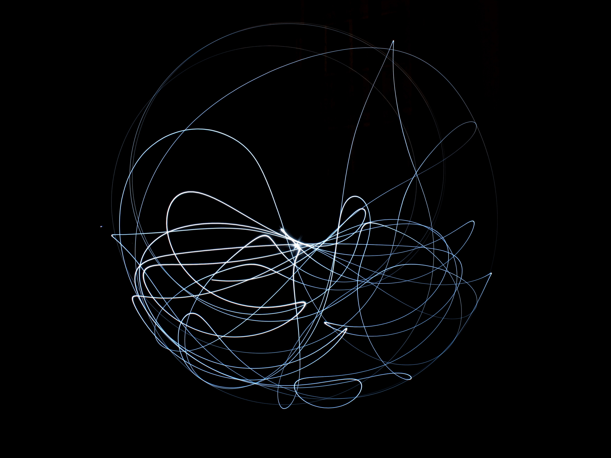
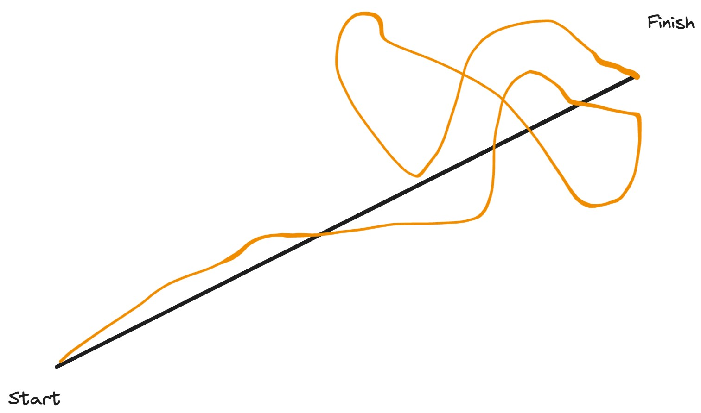

The estimation proces and estimation related time pressure are probably some of the most contentious aspects of software development, and it is usual for project managers to try to push down initial estimations made by developers, either because of pressure placed on themselves by varios stakeholders or because they know that tasks tend to take up the whole allotted time (because of developer procrastination), or both. To make matters worse, a whopping 70% of projects are considered “failures” based on initial targets. Even if the teams use agile methodologies, a large number of the sprints will fail to meet their story point target.
An All Too Familiar Story
The Sydney Opera house is such an iconic building that for many people it’s the first thing that comes to mind when they think of Australia’s famous city, yet not many are aware of its troubled history and how it came to be built. In 1995, the then prime minister Joseph Cahill launched an international design contest and after reviewing 233 entries from architects in thirtytwo countries, Danish architect Jørn Utzon was declared the winner, despite the fact that he simply entered a collection of pencil sketches outlining only the shape of the building.
There were no interior plans, or plans for the support structure. Nevertheless, based on Utzon’s vision, the Australian government gave the construction works the green light, even before the schematics could be finalized, in order to capitalize on the existing enthusiasm and political support for the project. Little would they know that the project would exceed the budget by a factor of ten, and the whole process would take ten years, more than the three initially devised.
To maximize time, the support columns were built before the design of the roof was finalized. And once the design was completed, the columns proved too weak to support it, so all of them had to be removed and replaced. So why did the roof design take so long? Since such a structure had never been built before, the engineers didn’t know how to go about it, and no less than 14 designs had to be proposed before settling on the final one, a design that would be feasible.
The opera house scenario bears a lot of similarities with a lot of software projects. These start with the ideation phase, and then investors are keen to move fast to capture a market segment, since agile methodologies very popular right now. Let’s examine some concepts involved.
Brook’s Law
In his famous book, The Mythical Man Month, Fred Brooks argues that adding developers to a late project makes it even more late (which has since came to be known as Brook’s law).
Another way to put it is, if a woman can deliver a baby in nine months, it doesn’t mean that three women can deliver a baby in three months.

Throwing more people at a problem is one of the most common productivity traps that you can fall into, and not just because of the increase in coordination efforts. Some tasks cannot be partitioned effectively and don’t scale well with more developers. In fact, attempting to do it makes matters worse because there is now communication overhead, potential blocking and merging conflicts, etc.
Like communication between components, the number of pathways scales with O(n^2). It also takes quite a bit of time for developers to become productive on a specific project if they aren’t familiar with it, and they will need support, which takes away productive time from the experienced devs.
Exactly Predicting The Behavior Of Nonlinear Systems Is Hard
Let’s consider a very simple physical system, the double pendulum. Even if this is a system that’s very simple and its behavior is fully deterministic (we can write down the equations of motion), its time evolution is chaotic.
Teams of developers are complex systems. Communication between team members, dependencies, etc., all play a role, making exact progress tracking difficult, so a team behaves as a chaotical physical system in many ways.
This is not to say we can’t say anything about the system, but there will be a considerable degree of uncertainty.
The Dunning Kruger Effect And Optimism Bias
According to Wikipedia:
The Dunning–Kruger effect is a cognitive bias whereby people with low ability, expertise, or experience regarding a certain type of a task or area of knowledge tend to overestimate their ability or knowledge. Some researchers also include in their definition the opposite effect for high performers: their tendency to underestimate their skills. The Dunning–Kruger effect is usually measured by comparing self-assessment with objective performance.
We tend to be overly optimistic when we don’t know enough about a certain subject. Also when doing estimations, even if devs estimate in story points, they think in time and revert back to storypoints — and they usually assume the best outcome. However, in real life unexpected things happen:
- They might get a spec from the designer, only to find out mid-estimation that the UX design doesn’t translate well into CSS (more on that later).
- They might get a spec from the product owner and implement it, only to find that the spec is incomplete or the PO meant something else in the spec (because of inconsistent domain language).
- Or that the implementation actually requires a complicated database migration that wasn’t factored in.
- Or that breaking changes / major refactoring is required midway through implementation.
- They might implement the happy path, but miss edge cases, only for the testers to pick them up.
- In the process of implementation, they might find bugs in some of the libraries they are using, or simply that the libraries don’t support what they are trying to do.
- After implementing the functionality, the performance might not be acceptable.
When estimating, there’s a natural tendency amongst most developers to think they can go from start to finish in a straight line, but that’s rarely the case. You might get to where you think you’re 90% done, only for you to discover there’s another 90% to go (to paraphrase John Carmack).
Expectation versus reality:
If developers don’t know enough about how to tackle a piece of functionality, they will not be able to properly estimate it, is which case a technical user story (or spike) needs to be scheduled before the actual implementation. Spikes come from Extreme Programming (XP), are a special type of user story that is used to gain the knowledge necessary to reduce the risk of a technical approach, better understand a requirement, or increase the reliability of a story estimate. A spike has a maximum time-box size as the sprint it is contained in it. At the end of a sprint, the spike will be determined that is done or not-done just like any other ordinary user story.
Estimation is usually done as a team during the planning phase of the sprint, but there will be developers that specialize in different areas of the application, yet everybody will be required to provide an estimation (usually in the form of story points). Somebody that’s very familiar with the code in one area might come up with a higher estimation (because they understand the risks or potential complications inolved), head but succumb to team/peer pressure from the team to revise their estimation lower, because they are in the minority. Sometimes developers might pretend to believe that something is easy knowing it reflects well on them and it isn’t them who will build that piece of functionality (which is a form of office politics).
Finessing UX Is One Of The Most Time Consuming Aspects Of Development
The output of a designer (using tools like Adobe XD or Figma) will usually not translate directly 1:1 to CSS / HTML because design tools tend to use absolute positioning, whereas HTML uses a flowing layout. What usually ends up happening is the output is subtly different from what the designer expects, which means they will come back with changes.
In some cases, it is possible to do them; in other cases, a compromise will have to be reached, which takes time, and several iterative steps might be needed. Another issue is developers tend to think in components, and when using a framework such as React, they will have a set of building reusable blocks already prebuilt. Designers focus more on UX and that might not translate well into reusable components. Communication and collaboration is key to ensure that designers don’t come up with a design that isn’t pheasible.
Time Based Estimations Are Flawed
First of all, developers don’t work full eight hours per day. This is quite self-explanatory, and most teams consider effective work to be six hours per day, but even this is inaccurate. In his book The Shallows: What The Internet Is Doing To Our Brins, Nichlas Karr explains how the advent of the internet, multi-tasking, and social media has changed how our brain works.
Since a lot of the applications we use are designed to be addictive.
- Checking email.
- Checking social media.
- Receiving error log notifications.
On top of that:
- Being interrupted by coworkers on Slack.
- Working from home poses new challenges — like being interrupted by family members.
It takes an average of about 25 minutes (23 minutes and 15 seconds, to be exact) to return to the original task after an interruption, according to Gloria Mark, who studies digital distraction at the University of California, Irvine. Multiple studies confirm this, so it’s safe to say that the actual effective time spent coding is significantly less than six hours.
When we do estimations, we need to consider relative ones. So a story point should not be defined in time but rather in relation to another user story. This way we can escape the pitfall of unreliable time-based estimations.
Also, if you are doing planning poker, you might have noticed that the numbers on the cards (roughly) follow the Fibonacci sequence. As user stories get bigger, the uncertainty factor also gets larger, and things can spiral out of control. It is recommended to use a threshold for splitting stories into smaller ones — it doesn’t matter what the value is, it might be 5, it might be 20. It indicates that a story might be too big to estimate properly and should be an epic instead, or just several smaller user stories.
In Closing
There are several things teams can do in order to improve estimates:
- Use a strict domain language — this way important details aren’t lost in translation between product owners and developers. Don’t user interchangable terms such as “account” or “user”, as they might refer to different things.
- Make sure stakeholders understand the value of spikes — yes, there’s upfront cost to doing them, but it’s worth it in the long run.
- Get your designers on board with Atomic Design. If they are familiar with CSS and HTML, even better.
- Before building UI pages, get into the habit of first indentifying and building the needed components.
- Use Storybook to test these components in isolation.
- Use a self management technique like Pomodoro to manage your time, and work in uninterupted bursts.
- Resist the urge to go to time based estimations and always resort to relative comparisons between user stories: ask questions like “do you feel this 3 point user story is three times as complex as this one which is only 1 SP?“.